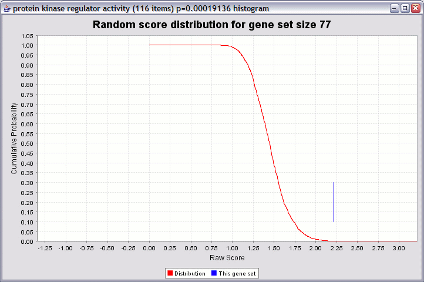

The goal of this method is the same as for ORA: to provide a p value for each gene set. The key difference lies in that ORA requires that you select a threshold for "gene selection", whereas GSR does not.
GSR uses all the gene scores for the genes in a gene set to produce a score. This means that genes that do not meet a statistical threshold for selection can contribute to the score. In addition, more information contained in the gene scores is preserved than in ORA, because ORA is essentially rank-based, whereas GSR uses the gene scores themselves.
In practice, ORA and GSR can yield similar results; however, we have found that GSR tends to be more robust than ORA (because there is no threshold to set) and can give interesting results in situations where ORA doesn't work as well (when no genes meet the predetermined selection threshold).
A high-level overview of the procedure is depicted below.
An illustration of the distribution obtained by resampling, and how a p value is computed, is shown below:

The red line is a cumulative probability distribution for the randomly sampled gene sets. You can see that raw scores over 2.00 are quite unlikely. In this example the gene set "protein kinase regulator activity" had a raw score of about 2.2. This yields a p value of about 0.00019 (the height of the red graph at that point). If the gene set had a score of 1.5, the p value would be poor (about 0.4).
The steps for the resampling analysis are the same as for ORA, except for the last step.
As for ORA, you must decide whether to take the negative logarithm of the gene scores or not, and whether "larger" genes scores are considered "good".
Tip: If you are using raw p values as your gene scores, check the "log transform" box, and leave the "larger scores are better" box unchecked. This is because the "larger is better" choice relates to the original threshold, not the log-tranformed threshold. On the other hand, if your p-values are already -log-transformed, you should use the exact opposite settings.
If you negative log-transform the gene scores, then your input gene scores are transformed according to the function f(x) = -log10(x). This option is provided as a convenience as the most common type of gene score is a p-value. The transform f(x) puts the p values on a more useful scale. However, you should still leave the "larger scores are better" box unchecked, as this refers to your original data.
If you are using fold change as your gene scores, you may want to check the "larger scores are better" box. This assumes that you have taken the absolute value of the fold change values before entering them into ermineJ. That way, changes up and down will be considered equally. Alternatively, you could focus on changes up or down by retaining the sign on the fold change values and setting this option depending on which direction of change you are interested in analyzing.
There is another explanation of gene scores here.
Unlike ORA, you must choose how many iterations to run. To speed things up, you can uncheck the "Always use full resampling" checkbox, which enables some approximations . Alternatively, we suggest a starting value of 10,000 iterations. When you decide on parameters you like, we recommend a larger number of iterations (perhaps 200,000 or more). This is to get sufficient precision in the p-values to make multiple-test correction work correctly.

After pressing the "finish" button, the analysis will run. Unlike ORA, the results will take a short while to compute. As the